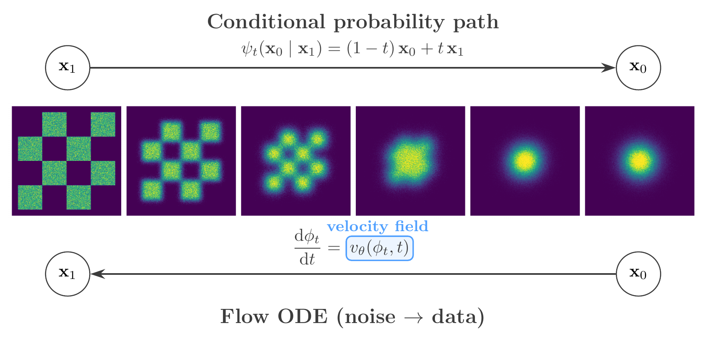
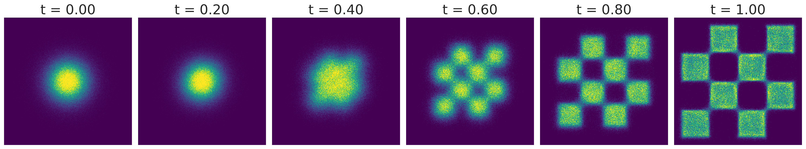
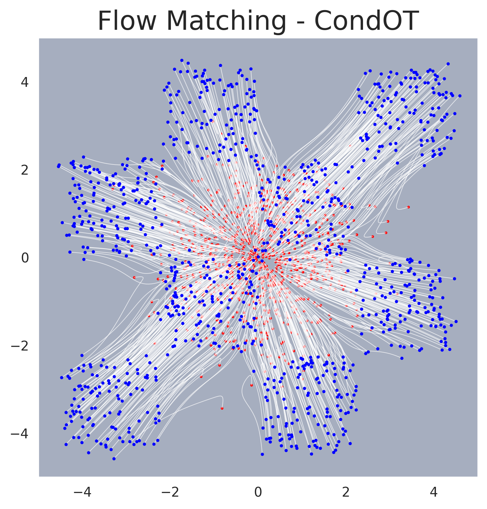

Flow Matching#
Based on the article Flow Matching Guide and Code (Lipman et al., 2024).
Flow Matching (FM) is a framework for training generative models by learning a continuous transformation from noise to data. While score-based diffusion models learn to reverse a noising process, flow matching takes an alternative route: it directly learns a velocity field that transports samples from a simple prior distribution to the data distribution along a prescribed probability path.
{kind=link}

Flow matching framework. Top: the conditional probability path interpolates between data (\(\mathbf{x}_1\)) and noise (\(\mathbf{x}_0\)). Bottom: the flow ODE generates data from noise, guided by the learned velocity field \(v_\theta(\phi_t, t)\).#
The Flow ODE#
Rather than constructing a forward diffusion and then denoising, flow matching specifies a time-dependent flow — a diffeomorphism \(\phi_t\) defined by the ordinary differential equation:
where \(v_t\) is the velocity field. A neural network is trained to approximate \(v_t\) so that the pushforward of the prior \(p_0\) through \(\phi_t\) matches the data distribution \(p_1\) at \(t=1\).
Notation Convention
Flow matching reverses the time convention relative to diffusion: \(\mathbf{x}_0\) denotes the source noise and \(\mathbf{x}_1\) the target data, with time running from \(0 \to 1\).
The density \(p_t\) along the flow satisfies the continuity equation:
which guarantees that probability is conserved along the trajectories. At sampling time, one draws \(\mathbf{x}_0 \sim p_0\) (a standard Gaussian) and integrates the learned velocity field forward from \(t=0\) to \(t=1\) using an ODE solver.
Conditional Flow Matching#
The flow matching loss trains the network \(v_\theta\) to approximate a target velocity field \(u_t(\mathbf{x})\) that generates the desired probability path:
Computing \(u_t(\mathbf{x})\) directly is intractable because it requires integrating over the entire data distribution. The key insight of Lipman et al. (2023) is that one can instead construct conditional vector fields \(u_t(\mathbf{x} \mid \mathbf{x}_1)\), each defined for a single data example \(\mathbf{x}_1\), and regress against those. The conditional flow matching (CFM) loss:
has gradients identical to those of the intractable \(\mathcal{L}_\mathrm{FM}\), so minimizing the tractable per-example objective recovers the correct marginal velocity field.
Affine Probability Paths and Optimal Transport#
In practice, the conditional probability path is specified through an affine transformation:
where \(\mathbf{x}_0 \sim \mathcal{N}(0, I)\) is the source noise. The time-dependent coefficients \(\alpha_t\) and \(\sigma_t\) — together with their derivatives — are provided by a scheduler and fully determine the conditional velocity field:
The conditional Optimal Transport (CondOT) scheduler sets \(\alpha_t = t\) and \(\sigma_t = 1-t\), yielding the linear interpolant:
with constant conditional velocity \(u_t(\mathbf{x}_0 \mid \mathbf{x}_1) = \mathbf{x}_1 - \mathbf{x}_0\). This corresponds to the exact solution of the dynamic optimal transport problem with quadratic cost, conditioned on a single target point. As a result, sample trajectories follow straight lines at constant speed, making the ODE easy to integrate — in the ideal case, a single Euler step suffices. In practice, \(10\)–\(50\) solver steps are typical for accurate recovery. This geometric simplicity stands in contrast to the curved trajectories of diffusion-based paths.
With the CondOT path, the CFM loss simplifies to:
where the target is the displacement vector from noise to data, independent of \(t\).
Connection to the Probability Flow ODE#
Flow matching and score-based diffusion share a deep mathematical connection. When the affine probability path is constructed to match a diffusion-style noise schedule (e.g. the VP or VE schedules), the resulting conditional velocity field coincides exactly with the drift of the probability flow ODE. The CFM framework thus subsumes the deterministic sampling pathway of score-based models. The practical advantage is that CFM provides a direct, simulation-free regression objective for the velocity field, bypassing the need to derive a denoising score matching loss through the forward SDE.
The CondOT path goes further by choosing a schedule that is not tied to any diffusion process. The resulting straight-line trajectories simplify both the loss landscape and the sampling procedure relative to diffusion-based alternatives.
Mass Coverage and Stochastic Sampling#
In practice, flow matching tends to produce mass-covering posteriors that distribute probability across the full support of the target distribution. The mechanism is the conditional expectation structure of the CFM objective: the optimal minimiser of the squared-error loss is the marginal velocity field \(u_t(\mathbf{x}) = \mathbb{E}[u_t(X_t \mid X_1) \mid X_t = \mathbf{x}]\), which averages over all conditional trajectories passing through a given state. Because this expectation integrates contributions from every mode, the network is trained to route probability toward the full support rather than collapsing to a single mode.
However, in deterministic ODE solvers, finite discretisation introduces a bias that consistently underestimates the variance of the target distribution. Singh and Fischer (2024) showed that one can construct a family of SDEs that share the same marginal distributions as the flow matching ODE, with the score function derived analytically from the learned velocity field. The injected stochasticity mitigates the variance-underestimation bias at the cost of a tunable bias–variance trade-off.
{kind=link}

Flow matching trajectories on an unconditional 2D example. Samples are transported from a Gaussian prior (right) to the data distribution (left) along approximately straight-line trajectories.#
{kind=link}

Sampling trajectories for flow matching. Individual sample paths traced by the ODE solver, showing the approximately straight-line transport from noise to data.#
Application to SBI#
In Simulation-Based Inference, flow matching is applied by training a conditional flow. The neural network learns a velocity field \(v_t(\boldsymbol{\theta}, \mathbf{x})\) that adapts based on the observed data \(\mathbf{x}\):
Target: the posterior distribution \(p(\boldsymbol{\theta}|\mathbf{x})\)
Process: start with random noise and flow it into valid posterior samples \(\boldsymbol{\theta}\)
Because the path is deterministic and straighter than diffusion paths, sampling is typically faster and numerically more stable. See the Conditional Density Estimation page for the full conditional formulation.
GenSBI Implementation#
The flow matching framework is implemented in GenSBI’s FlowMatchingMethod, which pairs the affine path with the CondOT scheduler and trains the velocity network via the CFM objective. Available solvers:
FMODESolver— deterministic ODE solver (default, fast)ZeroEndsSolver— SDE solver for improved mass coverageNonSingularSolver— alternative SDE solver
All three solvers can be swapped post-training without retraining the velocity network, allowing users to trade sampling speed for improved coverage.